Market Bully
A furious street-market chef who swings a giant burger. The first boss players meet in the city.
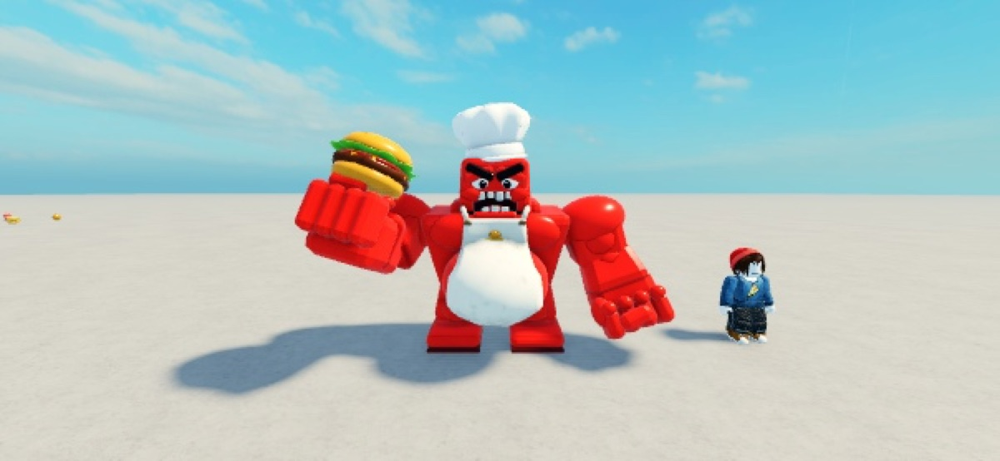
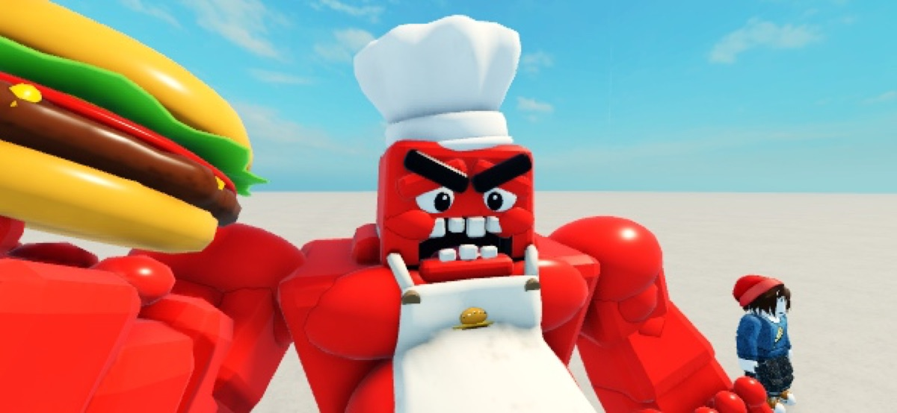

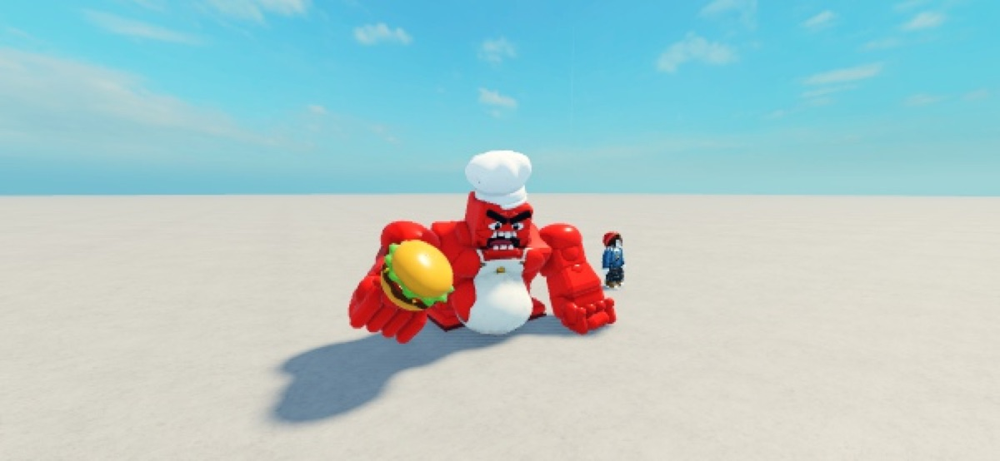
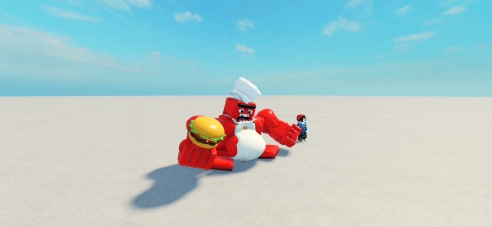
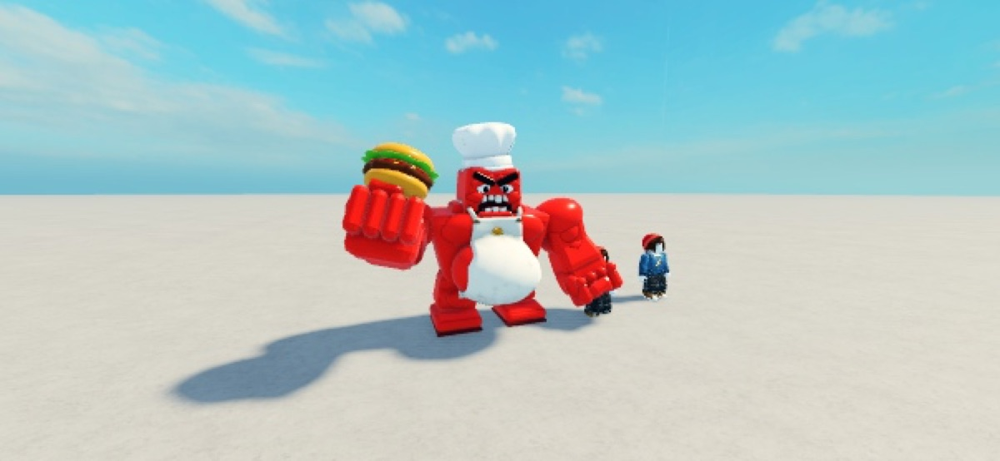
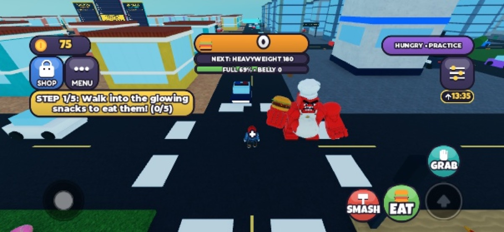
Elison Inc. / RiftHouse Studios / Roblox
This page shows the characters and props built so far for two Roblox games in development at RiftHouse Studios, with Elison Inc.: Cómetelo!, a monster-eats-the-city game, and Something's Changed, a spot-the-difference horror game. Everything here is work in progress. Concept art is AI-assisted; the 3D models are built in Blender by our in-house pipeline.

Cómetelo!
Three rigged, animated bosses, each built to read instantly on a phone screen. Players grow by eating the city, then fight or outgrow each boss before they can eat it.
A furious street-market chef who swings a giant burger. The first boss players meet in the city.






A walking construction site: cracked concrete, hazard stripes and a glowing furnace core.


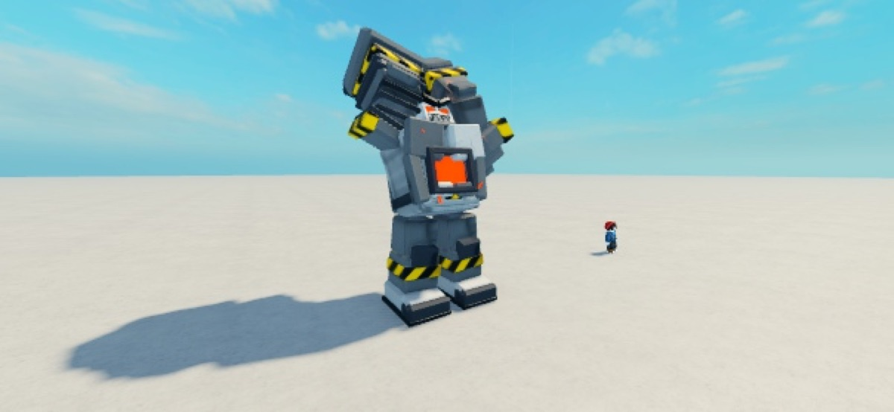
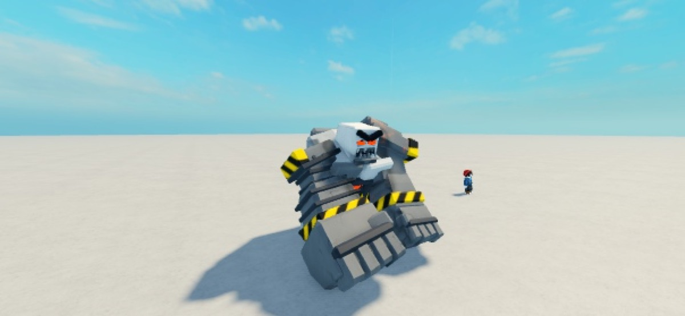

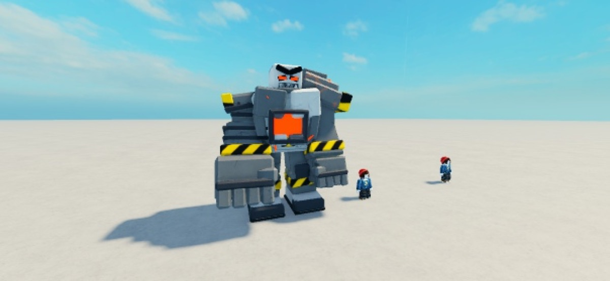

The king of the first world. Huge, royal and hungry, with a crown, fur cape and gold belly.
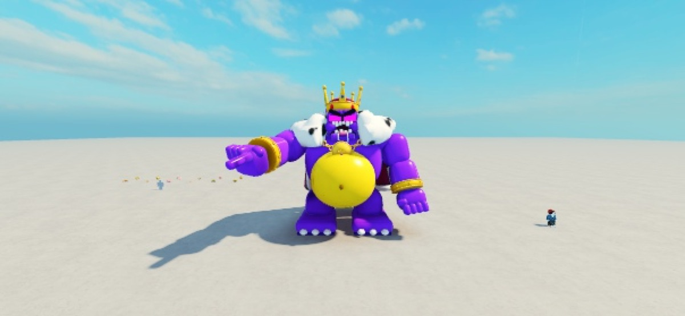


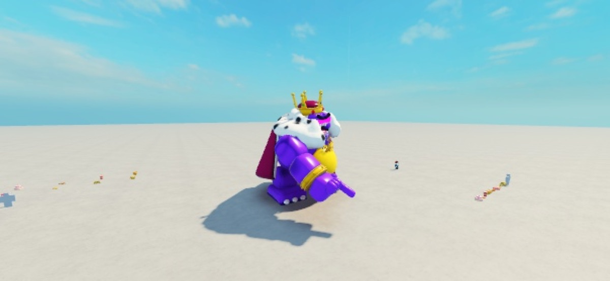
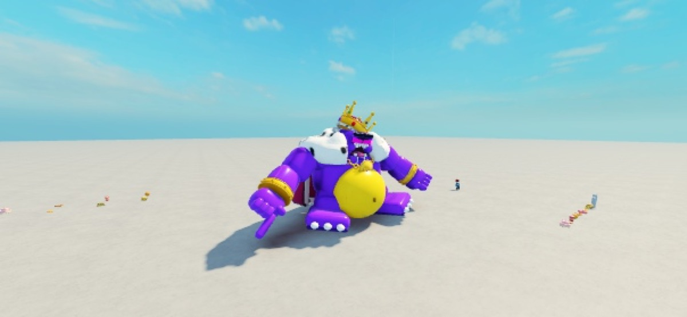

Cómetelo!
Ten food props modeled in Blender around a Latin street-food theme, each low-poly with a single material. The burger came first and set the standard for the rest.


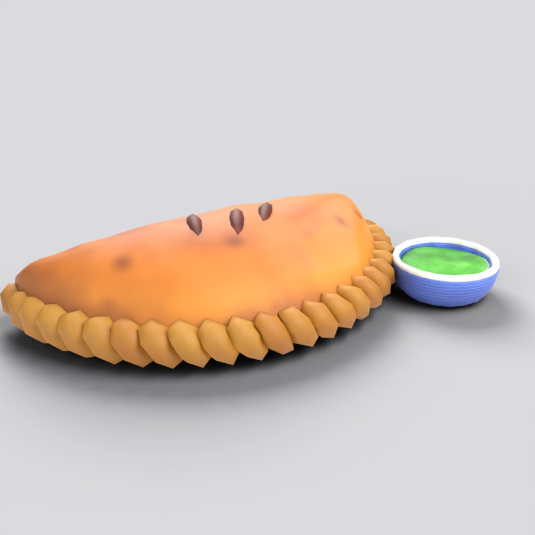


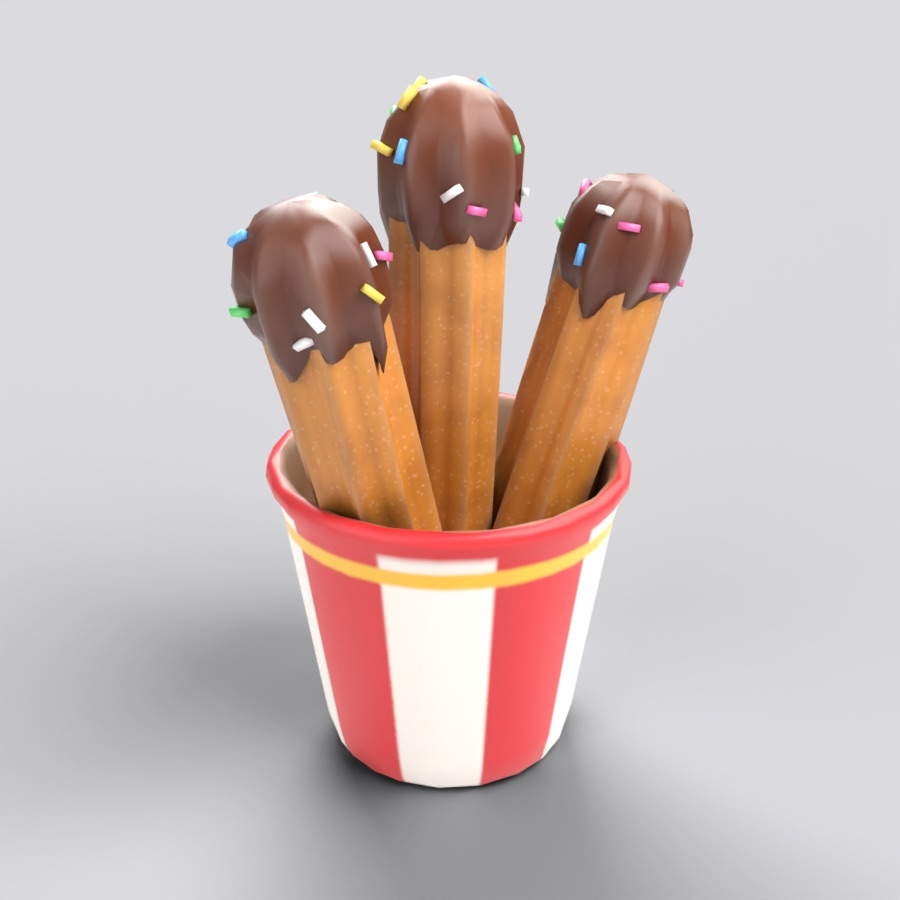


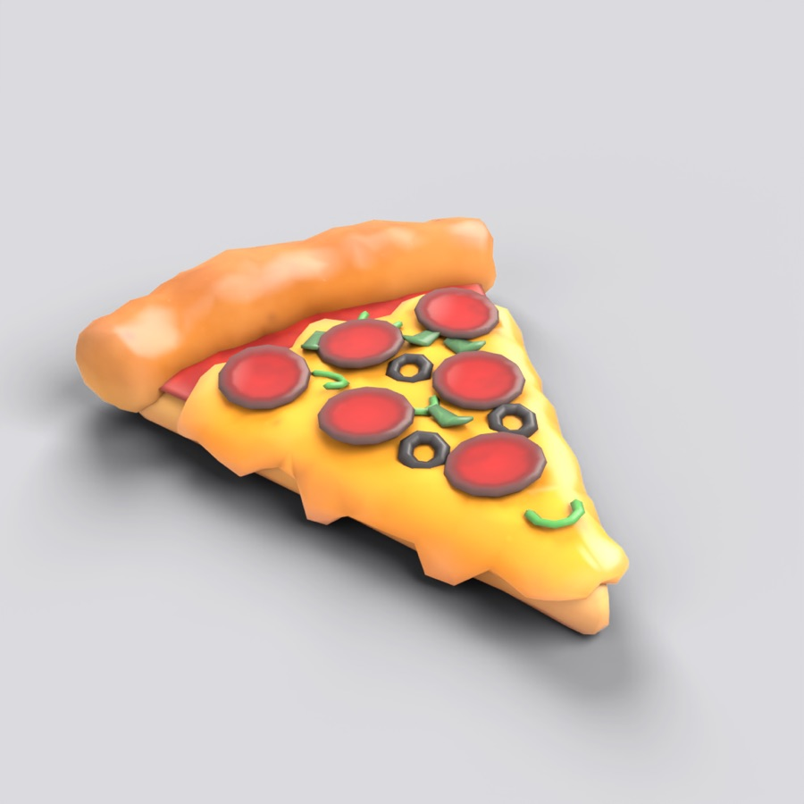
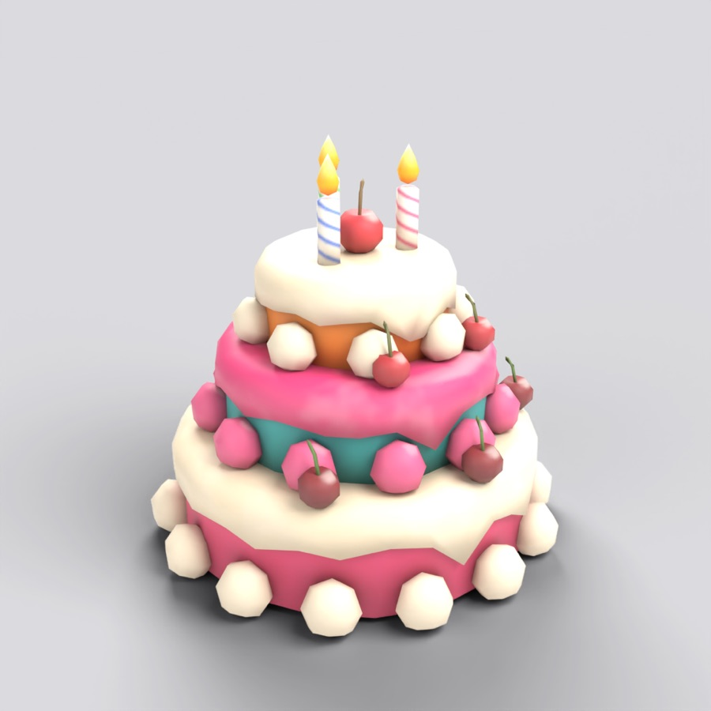
Something's Changed
AI-assisted concept turnarounds (front, side and back) for the Observer and its two other forms, the Mimic and the Silhouette. The low-poly game models are built from these picks.
Progress
Questions about this work: info@elisoninc.com